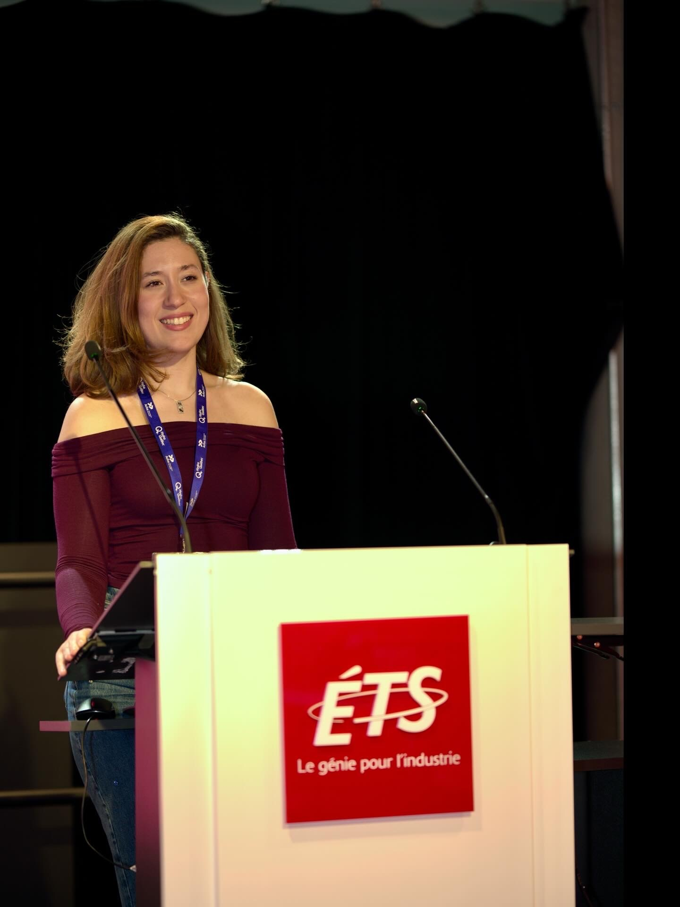
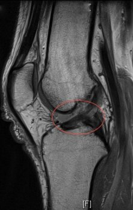
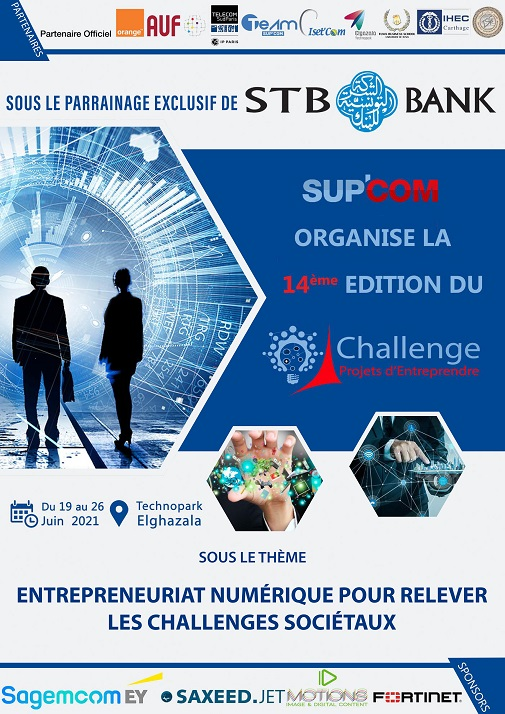
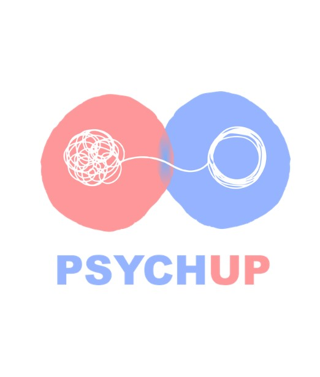
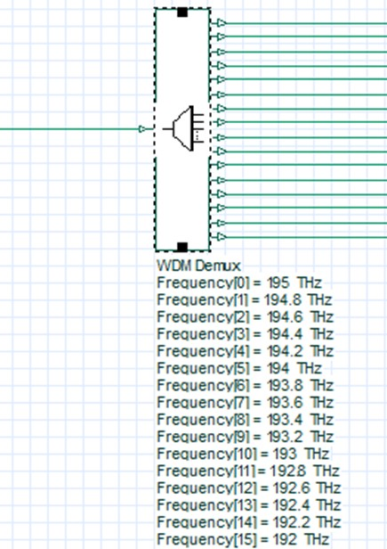
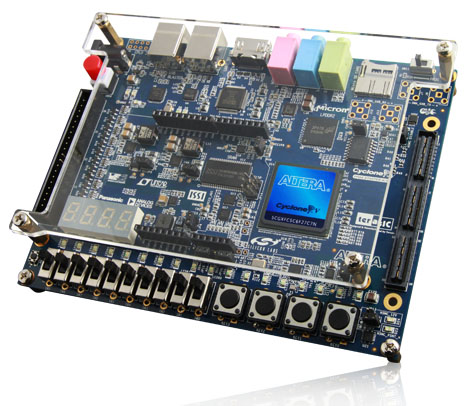
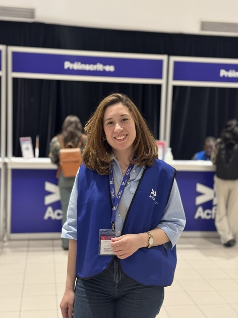
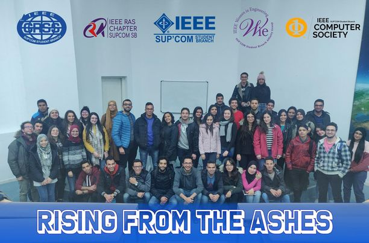
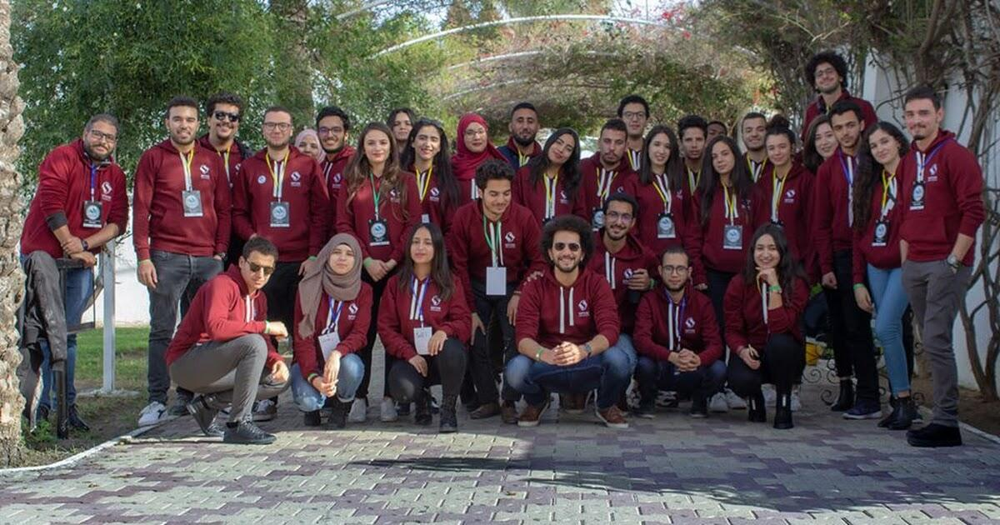
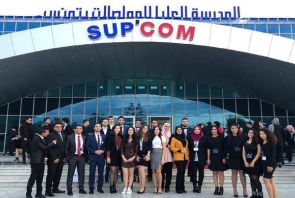

Maximum Entropy-Based Traffic Generation
IEEE Transactions on Network and Service Management
Read the paperHello, I'm
Data scientist, ML developer and AI & ML researcher with 4+ years turning raw data into decisions: demand forecasting and schedule optimization at Montréal-Trudeau airport, 5G traffic generation with Ericsson, and two IEEE publications.
move the mouse or touch · click to rebuild

About me
I'm a data scientist and machine-learning developer based in Montréal. I build complete ML systems: data pipelines, predictive models and optimization engines.
Most recently I built a forecasting and CP-SAT scheduling platform for passenger assistance at Montréal-Trudeau (YUL). Before that, my master's research with Ericsson produced synthetic 5G traffic that keeps more than 95% of the real data's statistical properties.
Research
IEEE Transactions on Network and Service Management
Read the paperIEEE International Conference on Communications (ICC 2025)
Read the paperMy thesis, visualized: when 5G measurements go missing, models fill the gaps, and my metrics check the result without ground truth.
My resume
End-to-end platform for reduced-mobility passenger assistance at Montréal-Trudeau Airport (YUL).
Master of Applied Science (M.A.Sc.) · GPA 4.04 / 4.30
Recommended for the Board of Directors' Excellence Award. Mitacs Accelerate scholarship.
Estimation, modeling, stochastic optimization and machine learning.
TCP/IP, DNS, routing, switching and network security, with Cisco Packet Tracer labs.
Graduate course on digital twins: modeling, control and VR. Supervised quadcopter simulations in MATLAB/Simulink and Unity 3D.
What I use
Portfolio

Web app that monitors a sports team's health and predicts injuries and unavailability from MRI data with ML.
View project
Smart IoT system to manage fishing and pleasure boats, with anti-theft security.
Watch video
Mobile app that connects users with psychiatrists while keeping them anonymous.
View project
Simulation and planning of a long-distance, high-speed WDM optical chain in OptiSystem.
View project
ALU programmed and tested on a Cyclone V FPGA board in Quartus.
View projectCommunity

Logistics, registration and participant orientation at Canada's largest multidisciplinary scientific conference.

Member of the world's largest technical professional organization.

Organized events and team-building, and kept members engaged.

Found sponsors for the school's annual forum.
Supported the student social-entrepreneurship competition.
Open to Data Scientist, ML Developer and AI & ML Researcher roles in Montréal or remote. I work in English and French.